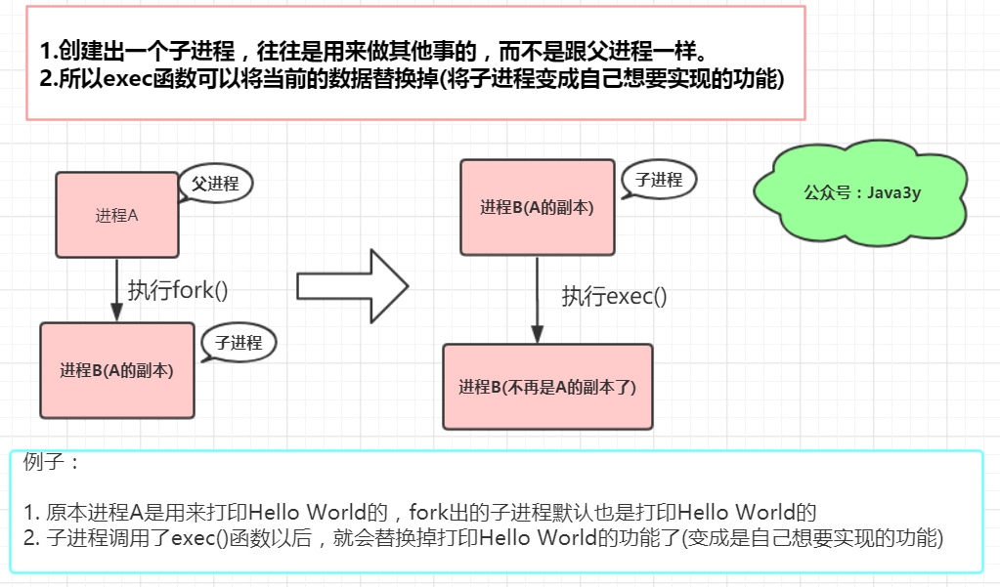
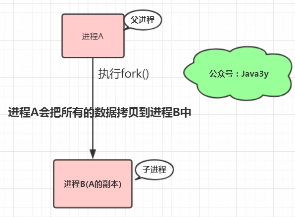

COW奶牛！Copy On Write机制了解一下
程序员必备知识——fork和exec函数详解
linux中fork（）函数详解（原创！！实例讲解）
linux c语言 fork() 和 exec 函数的简介和用法
Linux下Fork与Exec使用
Linux 系统调用 —— fork()内核源码剖析
Linux进程基础：
Linux写时拷贝技术(copy-on-write)
当你在 Linux 上启动一个进程时会发生什么？
Linux fork()所谓的写时复制(COW)到最后还是要先复制再写吗？
写时拷贝（copy－on－write） COW技术
Copy-On-Write 写时复制原理
文件系统中的 copy-on-write 模式有什么具体的好处？
新一代 Linux 文件系统 btrfs 简介:
聊聊并发-Java中的Copy-On-Write容器
<!-- more -->
Linux下的copy-on-write
在说明Linux下的copy-on-write机制前，我们首先要知道两个函数：fork()和exec()。需要注意的是exec()并不是一个特定的函数, 它是一组函数的统称, 它包括了execl()、execlp()、execv()、execle()、execve()、execvp()
1.1 fork
fork is operation whereby a process creates a copy of itself
fork是类Unix操作系统上创建进程的主要方法。fork用于创建子进程(相当于当前进程的副本)
新的进程主要通过老单进程复制自身得到，这就是fork
linxu下init进程是所有进程的爹(相当于java中的Object对象)
Linux进程都是通过init进程或init的子进程fork(vfork)出来的
#include <unistd.h>
#include <stdio.h>
int main ()
{
pid_t fpid; //fpid表示fork函数返回的值
int count=0;
// 调用fork，创建出子进程
fpid=fork();
// 所以下面的代码有两个进程执行！
if (fpid < 0)
printf("创建进程失败!/n");
else if (fpid == 0) {
printf("我是子进程，由父进程fork出来/n");
count++;
}
else {
printf("我是父进程/n");
count++;
}
printf("统计结果是: %d/n",count);
return 0;
}
/////// 输出结果
我是子进程，由父进程fork出来
统计结果是: 1
我是父进程
统计结果是: 1
fork作为一个函数被调用。这个函数会有两次返回，将子进程的pid返回给父进程，0返回给子进程。(小于0，则说明创建子进程异常)
再次说明:当前进程调用fork()，会创建一个跟当前进程完全相同的子进程(除了pid)，所以子进程同样会执行fork()之后的代码
1.2 exec
从上面我们已经知道了fork会创建一个子进程。子进程是父进程的副本。
exec函数的作用是:装在一个新的程序(可执行映像_覆盖当前内存空间中的映像，从而执行不同的任务
exec系列函数在执行时会直接替换掉当前进程的地址空间

1.3 copyOnWrite
fork()会产生一个和父进程完全相同的子进程(除了pid)
如果按照传统的做法，会直接将父进程的数据拷贝到子进程中，拷贝完之后，父进程和子进程质检的数据段和栈段是互相独立的

但是，以我们的使用经验来说:往往子进程都会执行exec()来做自己想要实现的功能
所以，如果按照上面的做法的话，创建子进程时复制过去的数据是没用的(因为子进程执行exec()，原有的数据会被清空)
既然很多时候复制给子进程的数据是无效的，于是就有了 Copy On Write 这项技术了， 原理也很简单:
fork创建出的子进程，与父进程共享内存空间。也就是说，如果子进程不对内存空间进行写入操作的话，内存空间的数据并不会复制给子进程，这样创建子进程的速度就很快了(不用复制，直接引用父进程的物理空间)
并且如果在fork函数返回之后，子进程第一时间exec一个新的可执行映像，那么也不会浪费时间和内存空间了。
另外的表达方式:
在fork之后exec之前两个进程用的相同的物理空间(内存区)，子进程的代码段、数据段、栈段都是指向父进程的物理空间，也就是说，两者的虚拟空间不同，但其对应的物理空间是同一个。
当父子进程中有更改相应段的行为发生时，再为子进程相应的段分配物理空间
如果不是exec，内核会给子进程的数据段、栈段分配相应的物理空间(至此两者有各自的进程空间，互补影像)代码段继续共享父进程的物理空间(两者的代码完全相同)
而如果因为exec，由于两者执行的代码不同，子进程的代码段也会分配单独的物理空间
Copy On Write 技术实现原理:
fork()之后，kernel将父进程中所有的内存页的权限都设为read-only，然后子进程的地址空间指向父进程。当父子进程都只读内存时，相安无事。当其中某个进程写内存时，CPU硬件检测到内存页是read-only的，于是触发页异常中断(page-fault)，陷入kernel的一个中断例程。中断例程中，kernel会把触发的异常的页复制一份，于是父子进程各自持有独立的一份
Copy On Write 技术有点:
COW技术可减少分配和复制大量资源时带来的瞬间延时。
COW技术可减少不必要的资源分配。比如fork进程时，并不是所有的页面都需要复制，父进程的代码段和只读数据段都不被允许修改，所以无需复制。
Copy On Write 技术缺点:
如果在fork()之后，父子进程都还需要继续进行写操作，那么会产生大量的分页错误(页异常中断page-fault)，这样就得不偿失。
几句话总结Linux的Copy On Write技术:
fork出的子进程共享父进程的物理空间，当父子进程有内存写入操作时，read-only内存页发生中断，将触发的异常的内存页复制一份(其余的页还是共享父进程的)。
fork出的子进程功能实现和父进程是一样的。如果有需要，我们会用exec()把当前进程映像替换成新的进程文件，完成自己想要实现的功能。
Redis的COW
《Redis设计与实现》：
执行BGSAVE命令或者BGREWRITEAOF命令的过程中，Redis需要创建当前服务器进程的子进程，而大多数操作系统都采用写时复制（copy-on-write）来优化子进程的使用效率，所以在子进程存在期间，服务器会提高负载因子的阈值，从而避免在子进程存在期间进行哈希表扩展操作，避免不必要的内存写入操作，最大限度地节约内存。
理解:
Redis在持久化时，如果是采用BGSAVE命令或者BGREWRITEAOF的方式，那Redis会fork出一个子进程来读取数据，从而写到磁盘中。
总体来看，Redis还是读操作比较多。如果子进程存在期间，发生了大量的写操作，那可能就会出现很多的分页错误(页异常中断page-fault)，这样就得耗费不少性能在复制上。
而在rehash阶段上，写操作是无法避免的。所以Redis在fork出子进程之后，将负载因子阈值提高，尽量减少写操作，避免不必要的内存写入操作，最大限度地节约内存。
文件系统的COW
Copy-on-write在对数据进行修改的时候，不会直接在原来的数据位置上进行操作，而是重新找个位置修改，这样的好处是一旦系统突然断电，重启之后不需要做Fsck。好处就是能保证数据的完整性，掉电的话容易恢复。
比如说：要修改数据块A的内容，先把A读出来，写到B块里面去。如果这时候断电了，原来A的内容还在！
java中COW
CopyOnWriteArrayList.java
CopyOnWriteArraySet.java
维基百科中COW
写入时复制（英语：Copy-on-write，简称COW）是一种计算机程序设计领域的优化策略。其核心思想是，如果有多个调用者（callers）同时请求相同资源（如内存或磁盘上的数据存储），他们会共同获取相同的指针指向相同的资源，直到某个调用者试图修改资源的内容时，系统才会真正复制一份专用副本（private copy）给该调用者，而其他调用者所见到的最初的资源仍然保持不变。这过程对其他的调用者都是透明的（transparently）。此作法主要的优点是如果调用者没有修改该资源，就不会有副本（private copy）被建立，因此多个调用者只是读取操作时可以共享同一份资源。
至少从本文我们可以总结出：
Linux通过Copy On Write技术极大地减少了Fork的开销。
文件系统通过Copy On Write技术一定程度上保证数据的完整性。